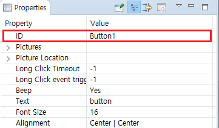

Button class
If you need a button, you can quickly implement it using the existing Button control. The specific steps are as follows:
- Double click to open the UI file
- Find the
buttoncontrol in the control set on the right - Left-click on the
buttoncontrol and hold it, then drag it to any position, release the left button. Then you can see the automatically generated button control. Left-click on the button just generated then you can see the related properties of the control on the right side of the editor. In this attribute form, you can freely modify the attributes like filling in an Excel sheet!

How to modify the color of buttons/keys?
Refer to "How to modify the color of text"
Refer to "How to use pictures to enrich the style of buttons/keys"
The default button control is pure color, which looks a bit boring. But you can add pictures to beautify the buttons. Here are the specific steps :
- First add a button control to the UI file. How to add button controls
- Left-click to select the button control you just added, and you can see the attribute table of the button in the property bar on the right side of the editor.
It is observed that the attributes related to the picture among all the attributes are:
- Picture settings
- This attribute can set the pictures in each state of the button, so that the button can automatically switch the corresponding picture according to the state change.
- Picture location
- By default, the picture is centered and zoomed to fill the entire button rectangle area. You can adjust the position of the picture and zoom in and out at will.
- Background picture
- Set the picture as the background of the button, the picture will cover the entire area of the button, and automatically zoom.
- Picture settings
Example：

Effect picture :

The above figure is a screenshot of the parameter part of the attribute table image, and its meaning is:
The button displays off_normal.png by default, and it displays on_normal.png when the button is selected
The four parameters of the left, top, width, and height of the picture determine the display area of the picture (in pixels). The upper left corner of the button rectangle area is the starting point coordinates (0, 0), and right and down are the positive direction. The end point coordinates are (67, 31). If the actual width and height of the picture are not equal to the specified width and height parameters, the picture will be scaled according to the specified width and height:

Understand the hierarchical relationship of button controls
For general button controls, it will draw four levels of content, which are from top to bottom:
- The text of the button
- The picture of the button
- The background picture of the button
- The background color of the button
How to add picture buttons/keys?
Refer to "How to add more animation effects to buttons"
When pressing this key/button, where or how to add your own operation code？
In actual development, button is a kind of control that is used very frequently. Usually, after the button click event occurs, some processing is done, such as writing to the serial port or refreshing the UI content.
To respond to the click time of the button is very simple. The following are the specific steps :
First create a
buttoncontrol and the property ID asButton1. How to create a button control
- In the
Project Explorer, select the current project, right-click, and select theCompile FlywizOSoption in the pop-up menu. The function of this step is to automatically generate template code based on all UI files in the current project. Learn more about code generation details Take the UI file
main.ftuas an example. After the previous step is completed, the filejni/logic/mainLogic.ccwill be generated in the current project folder, as shown below :
Note:main.ftucorresponds tomainLogic.cc, the prefixes of both are the same. Learn more about code generation detailsDouble-click to open
mainLogic.cc, you should see the following function at the end of the file,static bool onButtonClick_Button1(ZKButton *pButton) { //LOGD(" ButtonClick Button1 !!!\n"); return false; }When the
buttoncontrol is clicked on the serial port screen, the system will automatically call the associated function. So, if you need to add your own processing code, just write it directly in the associated function.- As you can see, the function name is generated according to certain rules. Take the
buttoncontrol as an example, its function name generation rule isonButtonClick_XXXX(ZKButton *pButton), where XXXX will be replaced with the control ID, So multiple button controls will generate different associated functions.
- As you can see, the function name is generated according to certain rules. Take the
Learn more about the associated functions of controls
System buttons
In addition to the ID value defined by itself, the button also retains two system button values: sys_back and sys_home. From the name, we can roughly know their functions: Back button and Home button ; Click the back button, the activity will return to the previous activity, if you enter a multi-level activity, click the Home button to directly return to the main activity (start activity). We only need to set the ID value to sys_back or sys_home in the attribute box of the button to achieve the corresponding function.

Learn more about activity interaction
How to handle long key press events
If you need to handle the long press event of the button, you need to manually add the long press event listener. Specific steps are as follows :
In the attribute table of the button, set the long press event trigger time and long press event cycle trigger interval two attributes; in the figure below, I set them to 1000 and 1000 respectively , The unit is milliseconds.

After setting the properties, compile and open the corresponding Logic.cc file; at the top of the file, declare
class LongClickListenerand inherit theZKBase::ILongClickListenerclass to implement thevirtual void onLongClick(ZKBase *pBase)method.namespace { // Add an anonymous scope to prevent multiple source files from defining the same class name and conflict at runtime //Realize the long press monitoring interface class LongClickListener : public ZKBase::ILongClickListener { virtual void onLongClick(ZKBase *pBase) { LOGD("Trigger long press event"); static int count = 0; char buf[128] = {0}; snprintf(buf, sizeof(buf), "Long press event trigger times %d", ++count); //Each time a long press event is triggered, modify the text of the button mLongButtonPtr->setText(buf); } }; }Next, declare it as a static type
static LongClickListener longButtonClickListener;Register the button long press monitoring interface in
static void onUI_init()functionstatic void onUI_init(){ //Register the button long press monitoring interface mLongButtonPtr->setLongClickListener(&longButtonClickListener); }Un-register the button long press monitoring interface in
static void onUI_quit()functionstatic void onUI_quit() { //Un-register the button long press monitoring interface mLongButtonPtr->setLongClickListener(NULL); }After adding the code, compile, download the program to the machine, and long press to test; you can see that the text of the button has been modified, and it means that the
onLongClickfunction has successfully responded. For specific implementation, please refer to Sample Code
How to handle button touch events
If you need to respond when the button press or lift, you can do by registering the touch monitoring interface. Specific steps are as follows:
Implement your own touch monitoring interface :
namespace { // Add an anonymous scope to prevent multiple source files from defining the same class name and conflict at runtime // Implement touch monitoring interface class TouchListener : public ZKBase::ITouchListener { public: virtual void onTouchEvent(ZKBase *pBase, const MotionEvent &ev) { switch (ev.mActionStatus) { case MotionEvent::E_ACTION_DOWN: mTouchButtonPtr->setText("Press"); break; case MotionEvent::E_ACTION_UP: mTouchButtonPtr->setText("Lift"); break; default: break; } } }; }Next, declare it as a static type
static TouchListener sTouchListener;Register the button touch monitoring interface in the
static void onUI_init()functionstatic void onUI_init() { //Register the button touch monitoring interface mTouchButtonPtr->setTouchListener(&sTouchListener); }Un-register the button touch monitoring interface in
static void onUI_quit()functionstatic void onUI_quit() { //Un-register the button touch monitoring interface mTouchButtonPtr->setTouchListener(NULL); }After adding the code, compile and download the program to the machine, click touch test; you can see that the text of the button has been modified. For specific implementation, please refer to Sample Code
Sample code
Since there are many button control properties, please refer to the ButtonDemo project in Sample Code for more property effects
Sample preview effect picture :